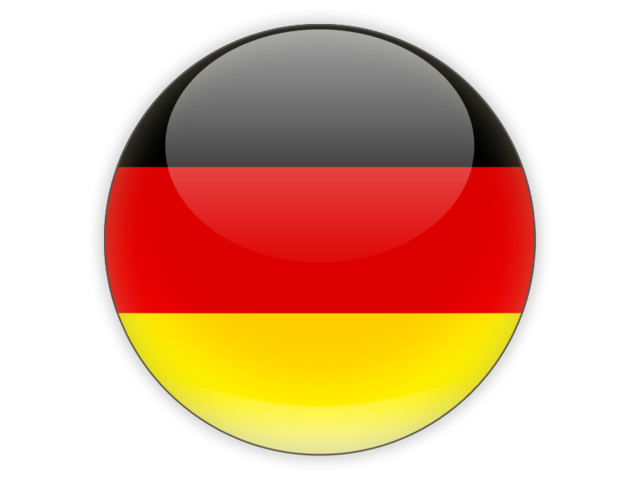
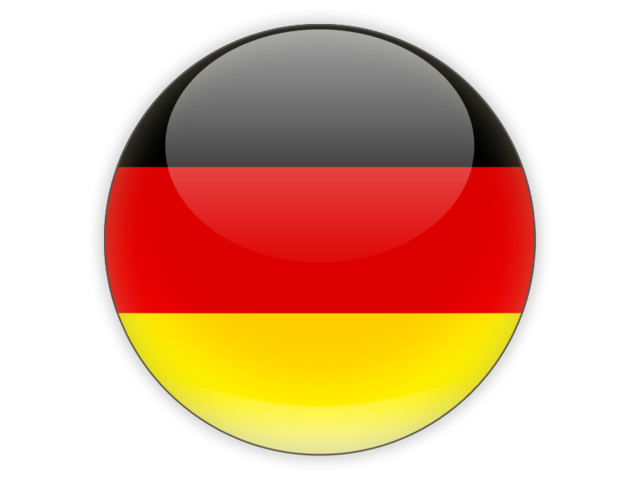

Vítáme Vás na prohlídce projektu "Dolní Vltavice žije", který spočívá ve virtuální rekonstrukci pùvodní vesnice Dolní Vltavice. Ta zažila pohnuté dějiny vč. odsunu německých a rakouských obyvatel po 2. světové válce a následného zatopení vodou lipenské přehrady. Projekt "Dolní Vltavice žije" se má stát drobným příspěvkem ke smíření našich národù…
Dolní Vltavice je dnes místní částí Černé v Pošumaví. Nachází se tedy v okrese Český Krumlov. Historie obce šahá až do 14. st. V minulosti byla obec velmi významná nejen jako obchodní cesta, ale také jako spoj s pošumavským pohraničím. Dnes je Dolní Vltavice rekreačním místem, které vyhledává mnoho lidí pro odpočinek, nabrání sil a energie ze zdejší skvostné přírody.
Postavený 8. srpna 1673 uprostřed náměstí pro výkon trestního práva
Dřevěný most postavený za 2. světové války americkou armádou

V první fázi projektu byla pomocí vrstevnic III. vojenského mapování a mapy ZM 10 vytvořena tehdejší vektorová mapa, ze které byl vyinterpolován digitální model území.

V druhé fázi vývoje modelu byl přes digitální model terénu přetažen letecký snímek z 50. let. Následně byly shromážděny veškeré fotografické a jiné materiály.

V poslední fázi byly vymodelovány jednotlivé objekty obce na základě katastrálních map, získaných snímkù a jiných faktografických materiálù. Vedle samotného 3D modelu vzniká i mapa s uchovanými historickými snímky.
Prohledněte si historickou mapu s galerii fotografií pro jednotlivé lokace

virtuální model obce před zatopením
Existuje mnoho cest, jak se seznámit s historií Dolní Vltavice...
Fotky na mapě
Historické snímky obce

3D model
V Google Earth App

Video
YouTube
Pension Calla
záštita projektu
 
Ing. Ema Kondysková, Pension Calla, Dolní Vltavice 225, 38223 Černá v Pošumaví

Ing. Ema Kondysková, Pension Calla, Dolní Vltavice 225, 38223 Černá v Pošumaví


{kind=link}
{kind=link}
{kind=link}
{kind=link}
{kind=link}
{kind=link}